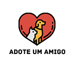
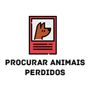

<ion-menu class="toolbar" color="primary" side="start" content-id="main-content">
  <ion-header color="primary">
    <ion-toolbar color="primary">
      <ion-title>Menu</ion-title>
    </ion-toolbar>
  </ion-header>
  <ion-content>
    <ion-list>
      <ion-item [routerLink]="['/mypubs']">
        <ion-icon name="archive-sharp" slot="start"></ion-icon>
        <ion-label>Minhas Publicações</ion-label>
      </ion-item>

      <ion-item [routerLink]="['/sobre']">
        <ion-icon name="alert-circle-sharp" slot="start"></ion-icon>
        <ion-label>Sobre</ion-label>
      </ion-item>

      <ion-item (click)="logout()">
        <ion-icon name="exit-sharp" slot="start"></ion-icon>
        <ion-label>Sair</ion-label>
      </ion-item>
    </ion-list>
  </ion-content>
</ion-menu>

<ion-header>
  <ion-toolbar color="primary">
    <ion-buttons slot="start">
      <ion-menu-button></ion-menu-button>
    </ion-buttons>
    <ion-title>Menu</ion-title>
  </ion-toolbar>
</ion-header>

<ion-content class="ion-page" id="main-content">
  
  <ion-grid>
    <ion-row>
      <ion-col size="6">
        <div class=figure [routerLink]="['/adote']">
          <p>
            
          </p>
        </div>
      </ion-col>
      <ion-col size="6">
        <div class=figure [routerLink]="['/doacao']">
          <p>
            
          </p>
        </div>
      </ion-col>
    </ion-row>

    <ion-row>
      <ion-col size="6">
        <div class=figure [routerLink]="['/procurarperdidos']">
          <p>
            
          </p>
        </div>
      </ion-col>

      <ion-col size="6" [routerLink]="['/registrarperdidos']">
        <div class=figure>
          <p>
            
          </p>
        </div>
      </ion-col>
    </ion-row>
  </ion-grid>
</ion-content>